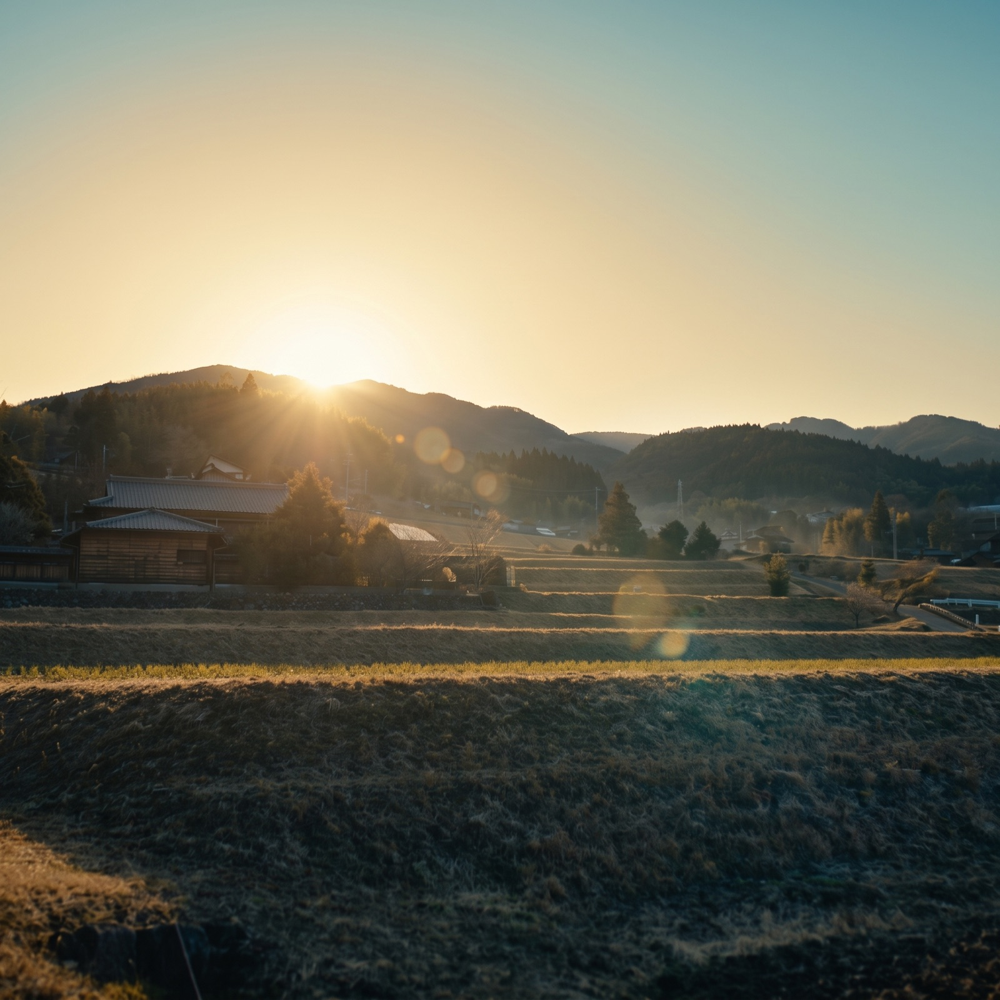

現状把握と価値化の設計
所在地、所有関係、境界、接道、規制、森林の状況、管理費用を分かる範囲から整理。取引を妨げる不確実さを減らし、想定される使い道と引き受け手を検討します。
 >ネイチャーキャピタル・リアルエステイトNature Capital Real Estate
>ネイチャーキャピタル・リアルエステイトNature Capital Real Estate

SERVICES
所在地、所有関係、境界、接道、規制、森林の状況、管理費用を分かる範囲から整理。取引を妨げる不確実さを減らし、想定される使い道と引き受け手を検討します。
現地の状況確認、写真報告、倒木・接道・不法投棄などのリスク把握、地域の森林事業者との調整を個別に検討します。東京など遠方にお住まいの方も相談できます。
登記資料、共有者、税金、境界、現在の管理状況など、家族で判断するための情報を整理。必要に応じて対応可能な専門家や事業者との連携を検討します。
※ 土地の価格上昇や売却を保証するものではありません。媒介・契約が必要な場合は、提携する宅地建物取引業者などとの対応を検討します。
CONCERNS
FIRST INTERVIEW
初回のインタビューは無料です。売却を前提にせず、分かること・分からないことを一緒に確認し、次に必要な対応を考えます。
現地確認、調査、専門家への相談などが必要な場合は、対応可否と費用を相談の上ご案内します。
FLOW
対面・電話・オンラインで、今の状況とご希望をお聞きします。
所在地や登記、図面、写真など、分かる範囲から一緒に整理します。
現地確認や専門家への相談が必要か、対応の可否を検討します。
必要な対応と費用を個別にお伝えします。
OUR APPROACH
売却ありきにしないこと
権利と管理の状況から確認すること
地域で実際に手入れできる人の存在を重視すること
地域に仕事が残る形を目指すこと
整った森林・里山が、地域の暮らしや将来の活動につながっていく。その可能性を、無理のない順序で考えます。
FAQ
はい。分かる範囲の地名、登記資料、古い図面や写真などをもとに、最初に状況をうかがいます。
はい。相続前の段階から、確認しておくことや今後の選択肢を整理するためのご相談を承ります。
売却を前提としたサービスではありません。状況を確認したうえで、保有・管理・売却を含めた選択肢を検討します。
初回インタビューを無料とさせていただきます。現地確認や調査が必要な場合は、対応可否と費用を事前にご案内します。
CONTACT
山林の場所、相続前・相続後の別、現在困っていることを、分かる範囲でお知らせください。
ウェブで無料相談を申し込む →Googleフォームが開きます。入力内容は日本GXグループのプライバシーポリシーに基づき取り扱います。